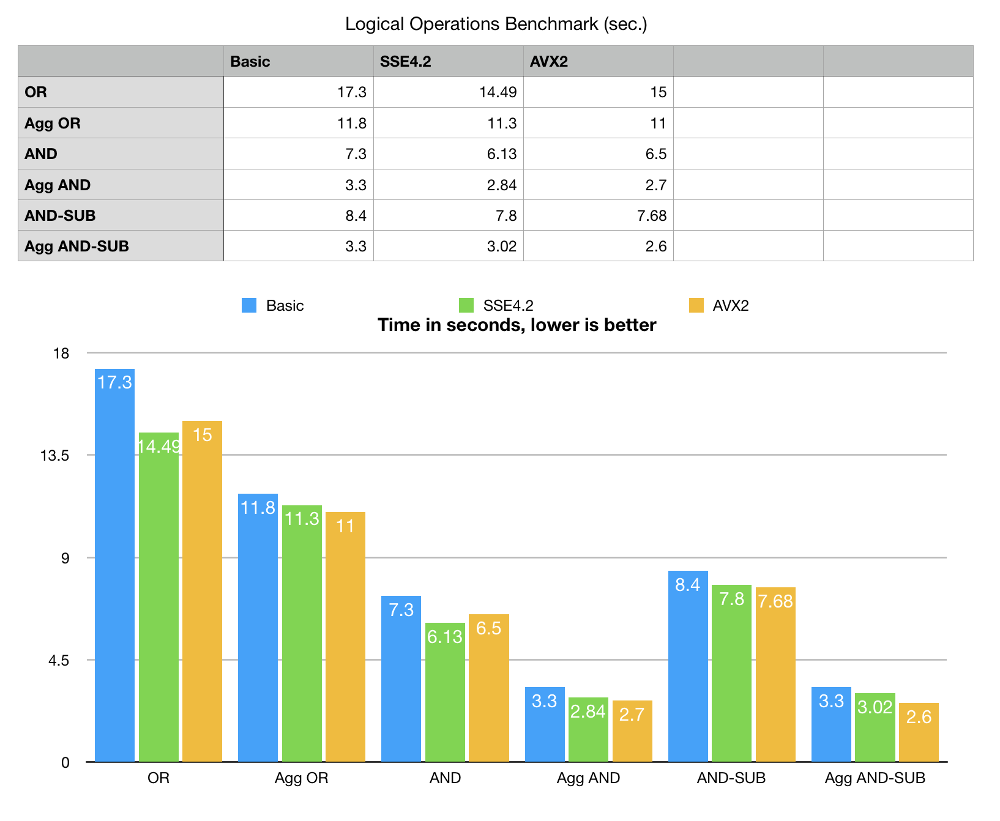
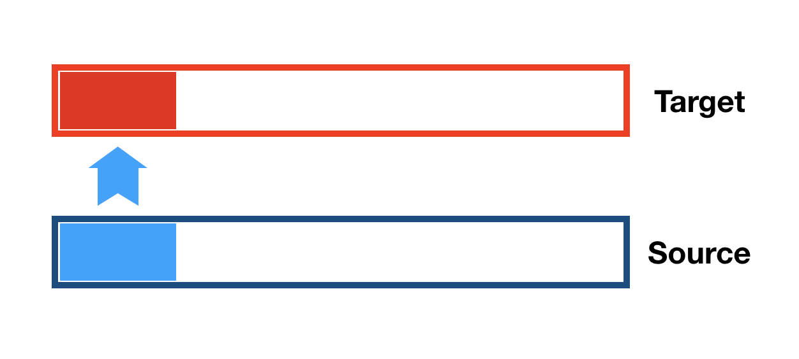
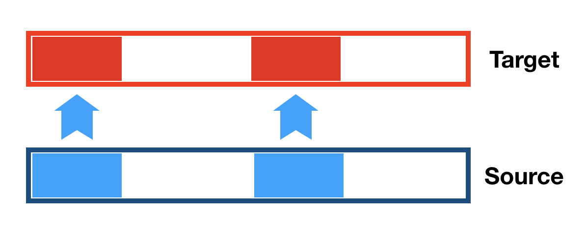
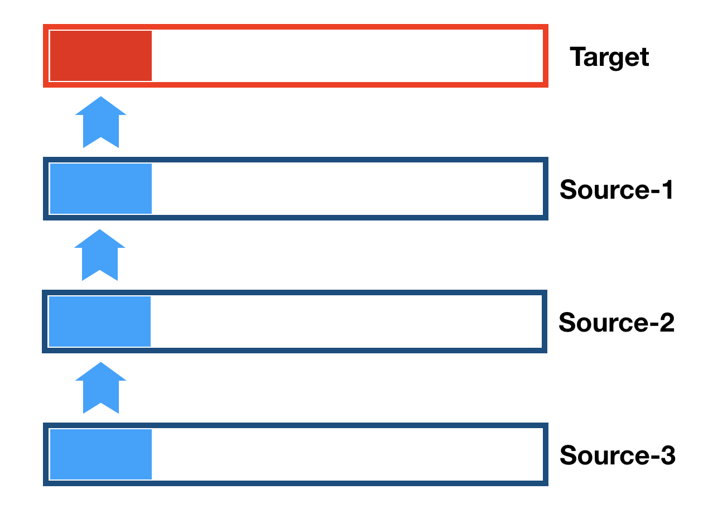

BitMagic aggregator - utilities for fast logical operations on groups of vectors
Anatoliy Kuznetsov. Aug 2018. anatoliy_kuznetsov@yahoo.com
Introduction
Search and retrieval systems often need to perform uniform logical operation on a number of vectors. AND(a, b, c, d). Group operations can be easily implemented via pairwise operations as res = a & b; res = res & c; res = res & d;
Easy to do yet subject of severe penalty for all cases except maybe very small and very sparse sets. Operations on dense sets will be memory bound. Logical operations on pure bit sets are fast on every contemporary CPU and memory is actually quite slow. Don’t be mistaken by the high “CPU Load” of your app - highly likely CPU may be actually waiting for memory.
Bit-vector logical operations are naturally "light" on CPU and often suffer from memory related starvation.
bm::aggregator<>
Bitmagic library implements an bm::aggregator<> utility class to perform aggregation operations.
Quick usage example
#include "bm.h"
#include "bmaggregator.h"
int main(void)
{
// declare standalone aggregator for logical operations
bm::aggregator<bm::bvector<> > agg;
std::vector<std::unique_ptr<bm::bvector<> > > vect;
for (unsigned i = 0; i < max_vectors; ++i)
{
std::unique_ptr bv(new bm::bvector<>());
bv->set(i);
bv->set(i+1);
bv->set(10000);
bv->set(20000);
vect.push_back(std::move(bv));
}
// in a loop we add all agruments to the aggregator
// (aggregator does not take ownership of pointers it receives)
//
for (unsigned i = 0; i < vect.size(); ++i)
{
agg.add(vect[i].get());
}
bm::bvector<> bv_res; // target vector for aggregation
agg.combine_or(bv_res); // perform logical OR on a vector group
agg.reset();
return 0;
}
Supported operations (v.3.13.0):
Benchmark
Benchmark data are synthetic, it generates 25 bit-vectors with various distribution patterns, 80M bits each (used in OR and AND tests). For AND SUB it also generates a second set of 7 random bit-vectors for the span of 50M bits. Benchmark size is large enough not to fit in CPU cache yet can be reproduced on a modest hardware with a few spare gigabytes of RAM.
 Benchmark data are NOT real. This generated set mixes palin and GAP (RLE prefix sum) compressed blocks at approximately 1:1 ratio, about 30+ bit-vectors in the mix. Data set is sufficiently large not to fit into CPU cache. SIMD optimization is implemented for uncompressed BLOBs only (something to improve later).
Quick look shows bm::aggregator<> is substantially faster than conventional linear (horizontal) operation.
Optimization factors
Cache blocking
 BitMagic library is architected to store its sparse bit vectors as 8KB blocks.
There are two ways of doing logical operations on vector groups: go pair by pair (horizontal)
or use vertical operation on a group of blocks, to maximize cache locality.
Aggregator uses vertical method.
Cache blocking/tiling technique (article by Intel Corp):
https://software.intel.com/en-us/articles/efficient-use-of-tiling.
BitMagic library is architected to store its sparse bit vectors as 8KB blocks.
There are two ways of doing logical operations on vector groups: go pair by pair (horizontal)
or use vertical operation on a group of blocks, to maximize cache locality.
Aggregator uses vertical method.
Cache blocking/tiling technique (article by Intel Corp):
https://software.intel.com/en-us/articles/efficient-use-of-tiling.
Memory bandwidth optimizations
While working on this problem I talked to colleagues from Intel and AMD about methods to improve bandwidth. While fruitful, this virtual discussion was not conclusive regarding the particular method to go forward. "You need to experiment".
Approach 1: 2-way read
inline
bool bit_block_or(bm::word_t* BMRESTRICT dst,
const bm::word_t* BMRESTRICT src)
{
#ifdef BMVECTOPT
return VECT_OR_BLOCK(dst, src);
#else
const bm::wordop_t* BMRESTRICT wrd_ptr = (wordop_t*)src;
const bm::wordop_t* BMRESTRICT wrd_end = (wordop_t*)(src + bm::set_block_size);
bm::wordop_t* BMRESTRICT dst_ptr = (wordop_t*)dst;
bm::wordop_t acc = 0;
const bm::wordop_t not_acc = acc = ~acc;
do
{
acc &= (dst_ptr[0] |= wrd_ptr[0]);
acc &= (dst_ptr[1] |= wrd_ptr[1]);
acc &= (dst_ptr[2] |= wrd_ptr[2]);
acc &= (dst_ptr[3] |= wrd_ptr[3]);
dst_ptr+=4;wrd_ptr+=4;
} while (wrd_ptr < wrd_end);
return acc == not_acc;
#endif
}
This is pretty straightforward logical OR on 2 blocks. One of the arguments was that this is actually the fastest way to do things, 64-bit word should be enough to saturate the memory channel, no other optimization is possible on top of it. Except for cache blocking - the target block gets reused over and over again, fits L1, saves the bandwidth.
The function also uses on-the-fly saturation detection. It detects if teh block is all 1s and stops column processing, because nothing new can be found.
Approach 1: 2x2 way read - AVX2
inline
bool avx2_or_block(__m256i* BMRESTRICT dst,
const __m256i* BMRESTRICT src)
{
__m256i m1A, m1B, m1C, m1D;
__m256i mAccF0 = _mm256_set1_epi32(~0u);
__m256i mAccF1 = _mm256_set1_epi32(~0u);
__m256i* BMRESTRICT dst2 =
(__m256i*)((bm::word_t*)(dst) + bm::set_block_size/2);
const __m256i* BMRESTRICT src2 =
(const __m256i*)((bm::word_t*)(src) + bm::set_block_size/2);
const __m256i* BMRESTRICT src_end =
(const __m256i*)((bm::word_t*)(src) + bm::set_block_size);
do
{
m1A = _mm256_or_si256(_mm256_load_si256(src), _mm256_load_si256(dst));
m1B = _mm256_or_si256(_mm256_load_si256(src+1), _mm256_load_si256(dst+1));
mAccF0 = _mm256_and_si256(mAccF0, m1A);
mAccF0 = _mm256_and_si256(mAccF0, m1B);
_mm256_stream_si256(dst, m1A);
_mm256_stream_si256(dst+1, m1B);
src += 2; dst += 2;
m1C = _mm256_or_si256(_mm256_load_si256(src2), _mm256_load_si256(dst2));
m1D = _mm256_or_si256(_mm256_load_si256(src2+1), _mm256_load_si256(dst2+1));
mAccF1 = _mm256_and_si256(mAccF1, m1C);
mAccF1 = _mm256_and_si256(mAccF1, m1D);
_mm256_stream_si256(dst2, m1C);
_mm256_stream_si256(dst2+1, m1D);
src2 += 2; dst2 += 2;
} while (src2 < src_end);
__m256i maskF = _mm256_set1_epi32(~0u);
mAccF0 = _mm256_and_si256(mAccF0, mAccF1);
__m256i wcmpA = _mm256_cmpeq_epi8(mAccF0, maskF);
unsigned maskA = unsigned(_mm256_movemask_epi8(wcmpA));
return (maskA == ~0u);
}
 Same code for AVX2. Well, not exactly the same. It actually breaks the destination 8KB block in halves to run both halves “in parallel”. Some sources say that hardware fetch predictor experiences “reset” of priorities on streaming reads for every 4KB, so running 2 sub-blocks in parallel should be slightly faster. I cannot reliably confirm this effect, but this type of reading combined with using “stream” is not worse than plain linear SIMD unrolled function. Observations? 4KB half block read pattern does not show clear advantage. The result is not conclusive, more CPU and chipset models need to be tested to better understand possible effects here.
Approach 3. N-way read.

Since we have multiple blocks to combine into one, and have SSE2-AVX2 SIMD we can try to
build a multi-way bandwidth oriented operation: *dst |= *src1 | *src2 | *src3 | …
This is one piece of boring, repetitive code. Optimization attempt here is based on write savings and minimization of the loop overhead.
It is also worth mentioning, that HW prefetch works perfectly for 2-way, 3-way operations, but 5-way is different. This is the limit,
where HW prefetch starts getting confused. Software prefetch on source 3 and 4 actually improves performance.
_mm_prefetch ((const char*)src3, _MM_HINT_T0);
_mm_prefetch ((const char*)src4, _MM_HINT_T0);
Not a really big deal, but even 10% is not negligible.
inline
bool avx2_or_block_5way(__m256i* BMRESTRICT dst,
const __m256i* BMRESTRICT src1,
const __m256i* BMRESTRICT src2,
const __m256i* BMRESTRICT src3,
const __m256i* BMRESTRICT src4)
{
__m256i m1A, m1B, m1C, m1D;
__m256i mAccF0 = _mm256_set1_epi32(~0u); // broadcast 0xFF
__m256i mAccF1 = _mm256_set1_epi32(~0u); // broadcast 0xFF
const __m256i* BMRESTRICT src_end1 =
(const __m256i*)((bm::word_t*)(src1) + bm::set_block_size);
do
{
m1A = _mm256_or_si256(_mm256_load_si256(src1+0), _mm256_load_si256(dst+0));
m1B = _mm256_or_si256(_mm256_load_si256(src1+1), _mm256_load_si256(dst+1));
m1C = _mm256_or_si256(_mm256_load_si256(src1+2), _mm256_load_si256(dst+2));
m1D = _mm256_or_si256(_mm256_load_si256(src1+3), _mm256_load_si256(dst+3));
m1A = _mm256_or_si256(m1A, _mm256_load_si256(src2+0));
m1B = _mm256_or_si256(m1B, _mm256_load_si256(src2+1));
m1C = _mm256_or_si256(m1C, _mm256_load_si256(src2+2));
m1D = _mm256_or_si256(m1D, _mm256_load_si256(src2+3));
m1A = _mm256_or_si256(m1A, _mm256_load_si256(src3+0));
m1B = _mm256_or_si256(m1B, _mm256_load_si256(src3+1));
m1C = _mm256_or_si256(m1C, _mm256_load_si256(src3+2));
m1D = _mm256_or_si256(m1D, _mm256_load_si256(src3+3));
m1A = _mm256_or_si256(m1A, _mm256_load_si256(src4+0));
m1B = _mm256_or_si256(m1B, _mm256_load_si256(src4+1));
m1C = _mm256_or_si256(m1C, _mm256_load_si256(src4+2));
m1D = _mm256_or_si256(m1D, _mm256_load_si256(src4+3));
_mm256_stream_si256(dst+0, m1A);
_mm256_stream_si256(dst+1, m1B);
_mm256_stream_si256(dst+2, m1C);
_mm256_stream_si256(dst+3, m1D);
mAccF1 = _mm256_and_si256(mAccF1, m1C);
mAccF1 = _mm256_and_si256(mAccF1, m1D);
mAccF0 = _mm256_and_si256(mAccF0, m1A);
mAccF0 = _mm256_and_si256(mAccF0, m1B);
src1 += 4; src2 += 4;
src3 += 4; src4 += 4;
_mm_prefetch ((const char*)src3, _MM_HINT_T0);
_mm_prefetch ((const char*)src4, _MM_HINT_T0);
dst += 4;
} while (src1 < src_end1);
__m256i maskF = _mm256_set1_epi32(~0u);
mAccF0 = _mm256_and_si256(mAccF0, mAccF1);
__m256i wcmpA= _mm256_cmpeq_epi8(mAccF0, maskF);
unsigned maskA = unsigned(_mm256_movemask_epi8(wcmpA));
return (maskA == ~0u);
}
Pruning (on-the-fly block digest)
When we are doing bit-density reducing operations (AND) we can track how fast the bits disappear from parts of our set. 8KB block constitutes 64K bits. Thus 64-bit digest mask covers a sub-block of 1024 bits (1 bit per 1K bit). If digest bit is 0 - there is nothing there, all digest lane of 1024 bits is zero. Desaturated. One digest lane covers 4 AVX 256-bit reads (or 2 AVX-512). Note that 1 CPU cache lane is 64 bytes. Skipping a few digest strides has noticeable effect in performance (save on reads, save on ops, save on write). And this optimization is basically free, since we can compute and maintain the digest based on previous operation (say we have more than 10 vector blocks to combine).
The nature of this optimization is based on assumption, that AND or AND-NOT operations significantly reduce bit density. And this assumption actually works in practical search and retrieval use cases!
Probably the easiest way to explain it is to take a look at the digest based on AND operation source code. First it unpacks the digest word into list of ON bits, than performs logical operation for each digest sub-block, skipping all empty areas.
inline
bool avx2_and_digest(__m256i* BMRESTRICT dst,
const __m256i* BMRESTRICT src)
{
__m256i m1A, m1B, m1C, m1D;
m1A = _mm256_and_si256(_mm256_load_si256(src+0), _mm256_load_si256(dst+0));
m1B = _mm256_and_si256(_mm256_load_si256(src+1), _mm256_load_si256(dst+1));
m1C = _mm256_and_si256(_mm256_load_si256(src+2), _mm256_load_si256(dst+2));
m1D = _mm256_and_si256(_mm256_load_si256(src+3), _mm256_load_si256(dst+3));
_mm256_store_si256(dst+0, m1A);
_mm256_store_si256(dst+1, m1B);
_mm256_store_si256(dst+2, m1C);
_mm256_store_si256(dst+3, m1D);
m1A = _mm256_or_si256(m1A, m1B);
m1C = _mm256_or_si256(m1C, m1D);
m1A = _mm256_or_si256(m1A, m1C);
return _mm256_testz_si256(m1A, m1A);
}
inline
bm::id64_t bit_block_and(bm::word_t* BMRESTRICT dst,
const bm::word_t* BMRESTRICT src,
bm::id64_t digest)
{
const bm::id64_t mask(1ull);
unsigned short bits[65];
unsigned bcnt = bm::bitscan_popcnt64(digest, bits);
for (unsigned i = 0; i < bcnt; ++i)
{
unsigned wave = bits[i];
unsigned off = wave * bm::set_block_digest_wave_size;
#if defined(VECT_AND_DIGEST)
bool all_zero = bm::avx2_and_digest(&dst[off], &src[off]);
if (all_zero)
digest &= ~(mask << wave);
#else
const bm::bit_block_t::bunion_t* BMRESTRICT src_u = (const bm::bit_block_t::bunion_t*)(&src[off]);
bm::bit_block_t::bunion_t* BMRESTRICT dst_u = (bm::bit_block_t::bunion_t*)(&dst[off]);
bm::id64_t acc = 0;
unsigned j = 0;
do
{
acc |= dst_u->w64[j+0] &= src_u->w64[j+0];
acc |= dst_u->w64[j+1] &= src_u->w64[j+1];
acc |= dst_u->w64[j+2] &= src_u->w64[j+2];
acc |= dst_u->w64[j+3] &= src_u->w64[j+3];
j+=4;
} while (j < bm::set_block_digest_wave_size/2);
if (!acc) // all zero
digest &= ~(mask << wave);
#endif
} // for i
return digest;
}
For this optimization digest technique actually showed the best performance improvement, especially for cases when compressed block meets uncompressed (CPU intensive with branching).
Digest technique can be applied (reversed as digest of 1111s) for logical OR to detect stride saturation. Not done yet. Again, the assumption is that full saturation in OR happens not as often as full desaturation in AND, because search systems tend to favor reduction models. Nonetheless, digest OR optimization is on the TODO list.
Use cases
Aggregation as a technique has applicability in finding graph closures, processing of bloom filters, finding common components and general purpose IR systems.
One particular case, search in unordered bit-transposed vector benefits from aggregator operation AND-SUB. Details.
Conclusions
Benchmark shows comparison of regular “horizontal” logical operations OR, AND and AND-SUB with aggregator “vertical” method. The benchmark data is synthetic (more real tests to follow) and can be reproduced by compiling and running of BitMagic perf utility.
Looking at the benchmark data again, aggregator wins regardless of build mode, SIMD optimizations win in both, horizontal and vertical nominations, you can see that SSE4.2 and AVX2 are a tie for regular logical operations, and aggregator is winning at wider SIMD registers (despite power throttling concerns with AVX2).
BitMagic v.3.13.0 implements OR aggregator using N-way operations and AND (and AND-SUB) using digest method of search space pruning. This helps to better understand the case. Benchmarks show pruning wins over pure memory bandwidth oriented methods. This is an important observation that should help with many similar algorithms. Ultimate performance would call for holistic combination of bandwidth oriented methods and pruning. SIMD helps in all cases, but adds more in combination with cache-blocking techniques.
Acknowledgements
Special thanks to Dmitry Kozlov (AMD) and Roman Borisov (Intel) for discussing this case, references to manuals and support.